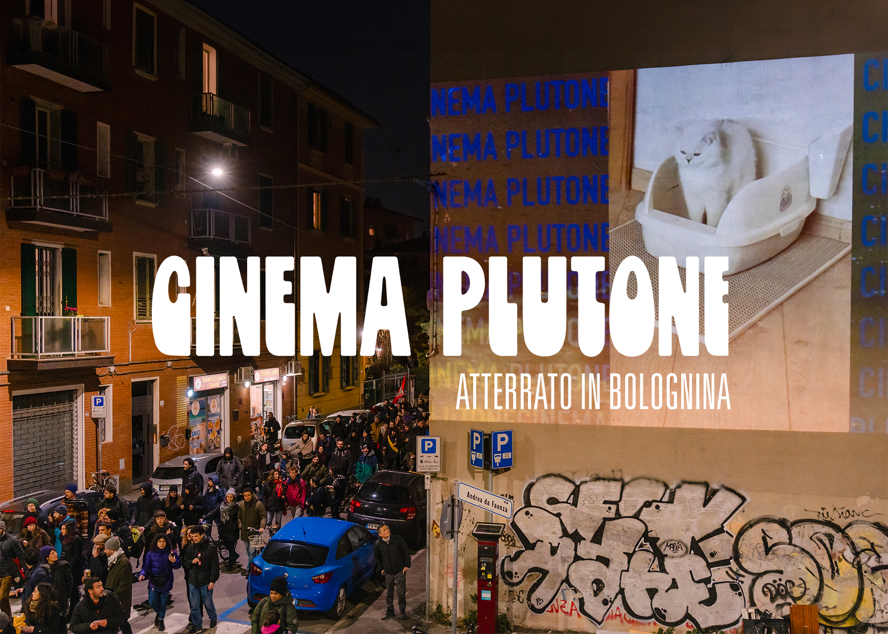
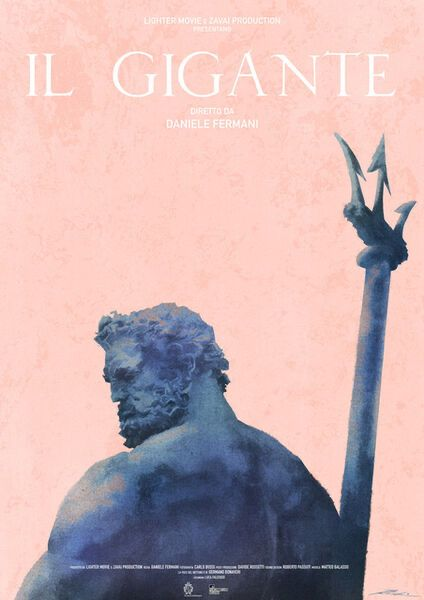
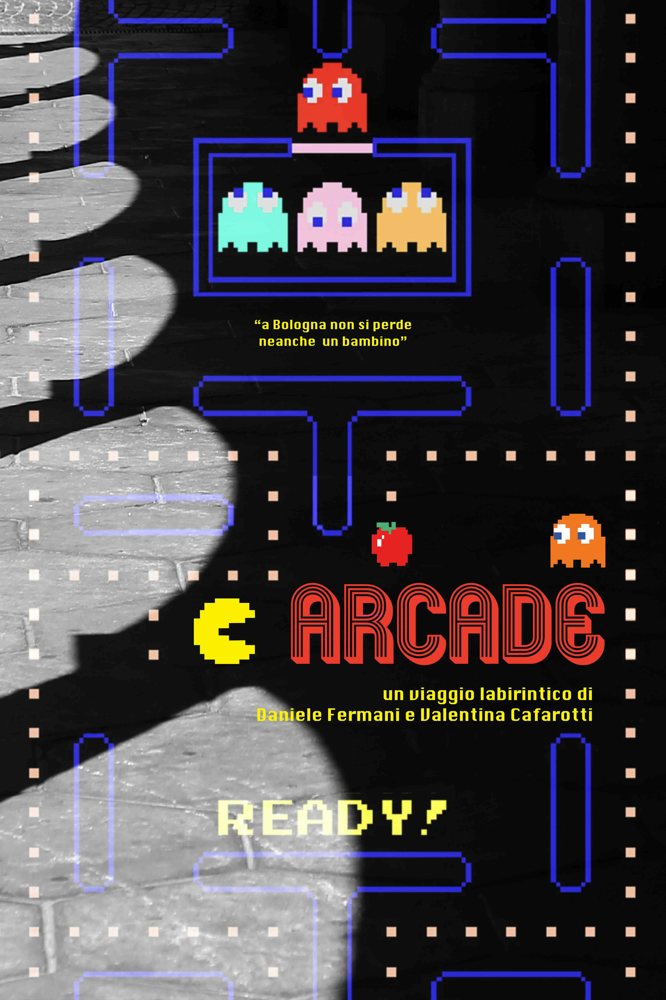
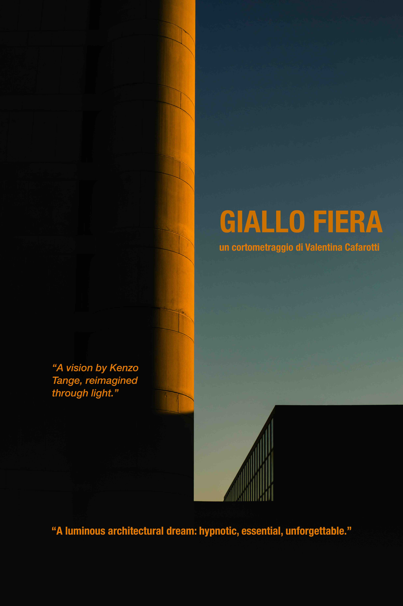
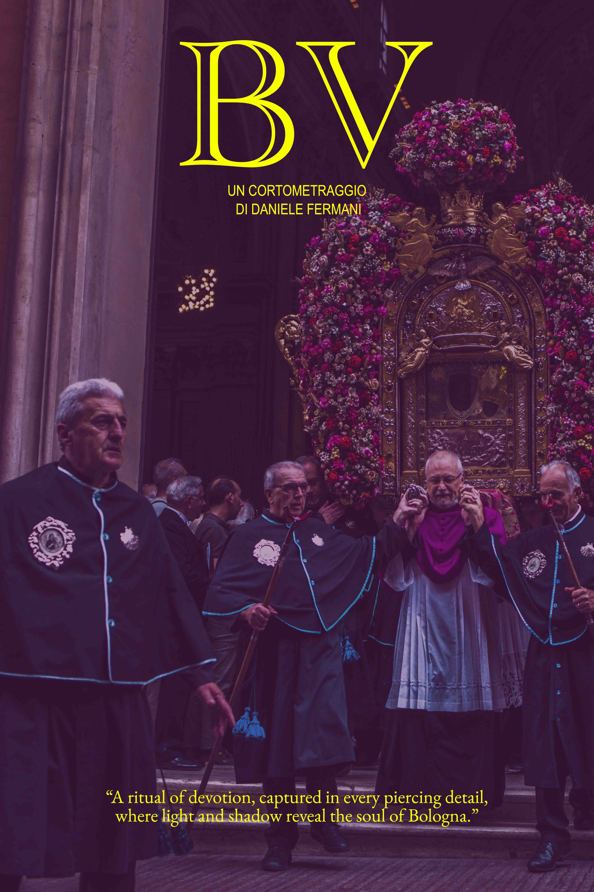
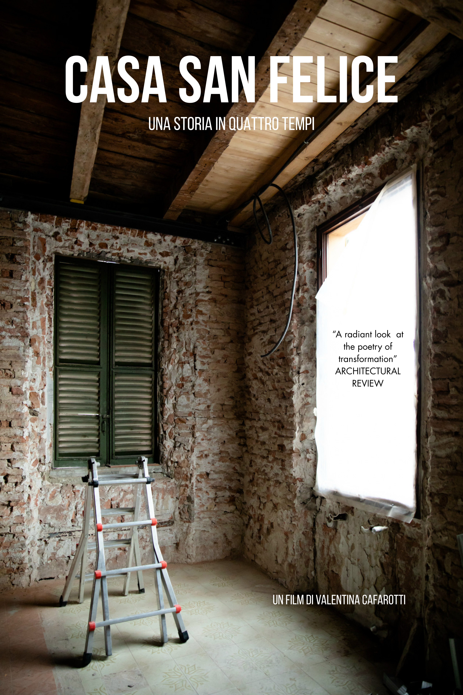

Accendere luoghi
Facciate, muri, finestre e affacci diventano superfici narrative, capaci di generare attenzione e presenza.

Immagini in movimento nello spazio urbano di Bologna
Cinema Plutone atterra a Bologna e trasforma un muro cieco in uno spazio parlante, libero ed effimero.
Benvenuti nel primo progetto di rigenerazione urbana che porta il cinema fuori dai luoghi consueti per creare nuove esperienze di comunicazione visiva in cui le superfici della città parlano a chi la abita e a chi la attraversa. Un progetto già attivo, in crescita e in continua evoluzione.
Il progetto
Il progetto utilizza il linguaggio audiovisivo del cinema muto e della videoarte. L'idea è semplice: illuminare una facciata cieca attivando un dialogo col suo intorno. Nessuna poltrona, nessun biglietto, solo immagini fruibili per il tempo desiderato.
Cinema Plutone trasforma l'atmosfera notturna facendo alzare lo sguardo e rallentare il passo.
Facciate, muri, finestre e affacci diventano superfici narrative, capaci di generare attenzione e presenza.
Videoproiezioni a cielo aperto creano occasioni culturali inaspettate.
Ogni intervento è insieme gesto artistico, osservazione urbana e apertura verso nuovi sguardi.
Proiezioni realizzate






Testimonianze
Zero.eu : "quel grande muro è sempre stata una presenza costante"
exibart.com : "ciò che non vediamo perché sotto i nostri occhi"
Traiettorie
Cinema Plutone nasce da un percorso concreto già avviato e continua a svilupparsi come progetto aperto, capace di mettere in relazione produzione audiovisiva, presenza urbana e nuove possibilità di attivazione culturale.
Chi partecipa
architetta, fotografa e videomaker, attiva in progetti interdisciplinari che uniscono spazio, narrazione visiva e documentazione artistica
videoartist, direttore della fotografia e fotografo, con esperienza in cinema, documentario e progetti visivi sperimentali
producer, sceneggiatore e story editor specializzato nello sviluppo di contenuti per cinema, televisione e media digitali